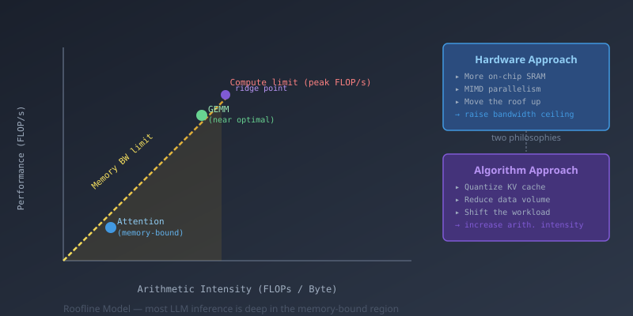

Something that genuinely surprised me when I started looking into LLM inference is that the bottleneck almost never sits where you'd expect. You'd think with chips pushing nearly 2,000 TFLOP/s, the problem would be raw compute. It isn't. The GPU is mostly just waiting for data to arrive from memory. There are two ways people are attacking this — one involves rethinking the hardware entirely, the other involves some surprisingly elegant maths. I want to walk through both.
There's a simple framework called the Roofline Model (Williams et al., Berkeley 2009) that I wish someone had shown me earlier — it makes a lot of hardware behaviour click into place. The core idea: for any computation, ask how many floating-point operations you do per byte you read from memory. This ratio is called arithmetic intensity.
That single number tells you which of two limits you'll hit first. Every chip has two hard ceilings: peak compute (FLOP/s) and peak memory bandwidth (bytes/s). If your arithmetic intensity is high — lots of operations per byte — you're compute-bound and the chip is working flat out. If it's low, you're memory-bound: the compute units are mostly idle, waiting for the next chunk of data to arrive. The crossover point between the two regimes is called the ridge point.
For an H100 SXM: ~1,979 TFLOP/s BF16 compute, ~3.35 TB/s HBM bandwidth. Ridge point: roughly 590 FLOPs/byte. To be compute-limited, you need to perform 590 floating-point operations for every single byte you read from memory. That's a high bar.
A large matrix multiply (GEMM) with a big batch gets close — you reuse each weight many times across the batch, so arithmetic intensity is high. But token generation in an LLM? You're producing one token at a time, which means loading all the weights and KV-cache entries once each to do a relatively small amount of arithmetic. Arithmetic intensity collapses.
This is the memory wall. It's not really a flaw — it's a structural consequence of von Neumann architectures where compute has historically scaled faster than memory bandwidth. But it means that for a lot of modern AI workloads, the right question isn't "how fast can we compute?" — it's "how fast can we move data?"
To see why this is such a problem in practice, it helps to think about what the KV-cache actually is. During LLM inference, every transformer layer stores the Key and Value projections for all previous tokens so they don't need to be recomputed. Reasonable idea — but it creates a memory structure that grows linearly with context length and has to be fully read on every single generated token.
For a model with \( L \) layers, hidden dimension \( d \), and \( T \) context tokens:
\[ \text{KV-cache size} = 2 \times L \times T \times d \times \text{bytes\_per\_element} \]
Llama-3.1-70B at 128K tokens in FP16: \(\approx\) 320 GB — four times the model weights.
At 3.35 TB/s of HBM bandwidth, reading 320 GB takes around 95 ms — and that's just the memory access, before any computation. You bottom out at roughly 10 tokens per second per chip for that context length, regardless of how beefy the ALUs are. The compute is irrelevant; you're just waiting for data.
One response is to ask whether the memory system itself is designed wrong, or at least not designed for this use case. The bottleneck comes from the physical gap between the processor and its DRAM — data has to cross a PCB, go through a memory controller, and eventually arrive many clock cycles later. What if you closed that gap?
A few approaches people are actually building:
The common thread: raise the bandwidth ceiling so the ridge point shifts left and attention lands closer to the compute-bound region.
The other direction is to just reduce how much data needs to move in the first place. If the pipe is the bottleneck, send less through it.
Quantization is the obvious lever. If each KV-cache element is 16 bits and you can represent it in 4 bits without wrecking accuracy, bandwidth demand drops 4× and your arithmetic intensity quadruples — the workload shifts right on the roofline chart toward compute territory.
The tricky part is that KV-cache quantization is harder than quantizing model weights. Weights are fixed — you can calibrate a quantizer offline with a representative dataset, spend hours optimising it, and then deploy. KV-cache entries are created at runtime, are unique to each user request, and depend on inputs you've never seen before. The algorithm has to work data-obliviously — it can't peek at the distribution of this particular prompt's keys and values before deciding how to compress them.
I came across TurboQuant (Zandieh et al., Google Research, ICLR 2026) recently and it's a good example of a paper where the core idea is simple enough to explain in a few sentences, but the proof that it actually works is non-trivial. It tackles data-oblivious KV-cache compression and comes with a formal guarantee that it's close to the theoretically best possible.
The core difficulty with data-oblivious quantization is this: for a \(d\)-dimensional vector \(x\), you don't know ahead of time how the magnitudes are spread across coordinates. Some might be large, some near zero — if you apply a simple uniform scalar quantizer to all coordinates identically, you waste bits on the small ones and saturate on the large ones.
TurboQuant's fix: apply a random orthogonal rotation to the vector before quantizing.
Let \( R \in \mathbb{R}^{d \times d} \) be a random orthogonal matrix. Transform: \( \tilde{x} = Rx \).
By the rotational symmetry of the Gaussian measure, the coordinates of \( \tilde{x} \) are nearly independent and identically distributed in high dimensions — each following a Beta\((1/2, (d-1)/2)\) distribution.
After rotation, the coordinates of \(\tilde{x} = Rx\) are nearly independent and identically distributed in high dimensions — following a Beta\((1/2, (d{-}1)/2)\) distribution regardless of what \(x\) originally was. That's the key: you now have a fixed, known distribution to design your quantizer for. An optimal Lloyd-Max scalar quantizer can be computed once offline for that distribution and reused for every single input vector. No per-vector calibration needed.
That gets you MSE-optimal compression. But attention doesn't care about MSE — it computes inner products between queries and keys. Minimising reconstruction error and minimising inner-product error aren't the same thing, and a naive quantizer introduces a systematic bias into the dot products.
TurboQuant handles this with a second stage. After the \((b{-}1)\)-bit MSE step, it takes the residual error and applies a 1-bit Quantized Johnson-Lindenstrauss (QJL) transform — essentially projecting the residual onto a random sign vector and storing just the sign. It sounds crude but the expectation of that product turns out to be an unbiased estimator of the inner product of the residual.
Stage 1 (MSE): Apply \(b-1\) bits of Lloyd-Max scalar quantization after rotation.
Stage 2 (IP bias correction): For residual \( r = x - \hat{x} \), compute \( s = \text{sign}(w^\top r) \) for random \( w \sim \{-1,+1\}^d \).
Combined estimator: \( \langle y, \hat{x} \rangle + s \cdot \langle y, w \rangle / \sqrt{d} \) is unbiased for \( \langle y, x \rangle \).
The paper proves that the combined scheme achieves:
"Near-optimal" here means: no data-oblivious online algorithm can do significantly better, regardless of how clever you get. That last factor of 2.7× is basically unavoidable without seeing the input distribution first. It's a nice example of an engineering result hitting a theoretical ceiling and being able to prove it.
The theory is satisfying, but I was more curious about whether the algorithm structure maps well onto an actual GPU. The operations involved — a random rotation (matrix multiply) plus coordinate-wise scalar quantization — are fully vectorisable with no data-dependent branches and no codebook lookups. It fits naturally onto tensor cores. There's already a Triton kernel implementation for it.
The benchmark numbers on an H100 are pretty striking:
TurboQuant benchmark results. Attention speedup (left) and KV-cache memory reduction (right) on H100, from Zandieh et al. 2026.
On needle-in-a-haystack retrieval at 104K context length it scores 0.997 versus full precision's 1.0. KIVI — probably the closest prior method — scores 0.981 at the same compression ratio.
What I find interesting is that the hardware approach and the algorithmic approach are actually attacking the same constraint from opposite ends — you can see this clearly in terms of the roofline model.
The two approaches are complementary rather than competing. Wide pipe plus less flowing through it is obviously better than either alone.
Neither is a complete fix. On the hardware side, more on-chip SRAM means less capacity — 900 MB is nowhere near enough to hold a frontier model, so you end up with complex pipeline-parallel setups splitting layers across many chips. SRAM density also grows slowly; model sizes and context lengths are outrunning it.
On the algorithm side, quantization is lossy by definition. TurboQuant's proofs are tight, but "near-optimal on average" isn't the same as "lossless for every input." Unusual attention patterns or adversarial prompts could land in the tail of the Beta distribution where the quantizer is least accurate. And there's a hard floor: Shannon's rate-distortion theory says at \(b\) bits per coordinate you can't compress better than \(\frac{1}{4^b}\). TurboQuant is within 2.7× of that — the remaining factor is provably unrecoverable without seeing the input distribution first.
The memory wall has been widening since the 1980s — compute density has historically doubled every 2–3 years while memory bandwidth doubles every 4–5. The KV-cache version of this problem is relatively new but the underlying tension isn't.
What makes it particularly pointed now is that context windows keep expanding (8K → 128K → millions of tokens), mixture-of-experts models require paging different expert weights in dynamically, and batch sizes for throughput push the working set larger. Every trend is making the memory pressure worse, not better.
I think what's genuinely interesting about papers like TurboQuant is that they bring real theoretical machinery — information theory, random matrix theory — to what could easily be treated as a pure engineering problem of tweaking hyperparameters until accuracy holds. When you can prove your compression scheme is within a constant factor of the information-theoretic optimum, you've actually understood the problem rather than just found a workaround for it.